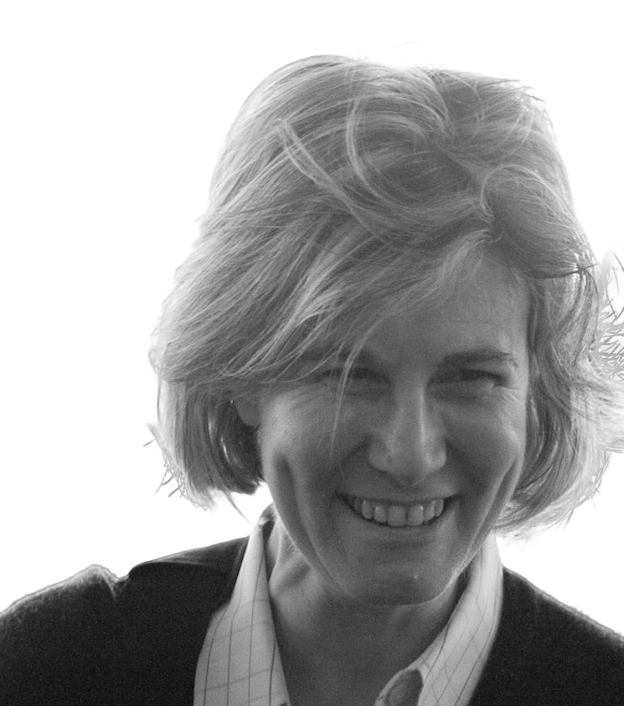

Welcome to my webpage
A bit about me
My research lies at the intersection of arithmetic geometry and its connections to noncommutative geometry. I focus on developing the concept of absolute geometry — geometry over the absolute point — and exploring fundamental geometries and geometries in characteristic one. The findings from this work have significant applications in number theory, including potential contributions toward the Riemann Hypothesis.
Prior to joining the faculty at Johns Hopkins in 2005, I worked at the University of Toronto from 1999 to 2005 and at MIT from 1996 to 1999.
I received the title of Dottore di Ricerca in Matematica from the Universities of Genoa and Turin in Italy in 1993 and the Ph.D. in Mathematics from the University of Chicago in 1996.
I am a Fellow of the American Mathematical Society since January 2024.
Editorial boards
I am a member of the Editorial Board of:
Research
My research interests lie in noncommutative arithmetic geometry, with a particular focus on forging new connections between noncommutative geometry, algebraic geometry, and number theory. This work is motivated, in part, by the goal of developing a strategy to approach the Riemann Hypothesis.
Noncommutative arithmetic geometry emerged in the early 1990s with the introduction of the Bost–Connes quantum statistical dynamical system. This system features the Riemann zeta function as its partition function, while its zero-temperature vacuum states realize the global class field isomorphism for the rational number field \(\mathbb Q\).
In an extensive collaborative project with Alain Connes, we have uncovered new connections between the BC-system, \(p\)-adic analysis, and the theory of Witt vectors. This work has also led to the development of an archimedean counterpart to the theory of rings of periods in \(p\)-adic Hodge theory.
The study of the adele class space of \(\mathbb Q\) has revealed a correspondence between its algebro-geometric structure and its original analytic definition. The resulting algebro-geometric space is a semi-ringed Grothendieck topos. Its foundational definition — the Arithmetic Site — is constructed as a topos over the Boolean semifield \(\mathbb B\), the smallest idempotent semifield.
Recent work develops categorical frameworks of modules and algebras over the categorical sphere spectrum \(\mathbb S\), rooted in Segal's \(\Gamma\)-sets. This offers a characteristic-free perspective on the geometry of rational primes and the topos-theoretic description of quotients of the adele class space.
The \(\mathbb F_1\)-arithmetic curve provides, through its geometric points, a realization of Scholze's heuristic idea in terms of untilts and the closed points of the Fargues–Fontaine curve. At a prime \(p\), the local geometry detects the extraction of \(p\)-power roots and produces the corresponding perfectoid-theoretic geometry.
Selected recent papers and resources
- On Absolute Algebraic Geometry: the affine case
- Segal's Gamma rings and universal arithmetic
- BC-system, absolute cyclotomy and the quantized calculus
- Riemann-Roch for the ring \(\mathbb Z\)
- On the metaphysics of \(\mathbb F_1\)
- Knots, primes and class field theory
- On the Jacobian of \(\operatorname{Spec}\mathbb Z\)
- On the absolute geometry of \(\operatorname{Spec}\mathbb Z\)
- Weil positivity and trace formula: the archimedean place
- Spectral triples and zeta cycles
- Zeta zeros and prolate wave operators: semilocal adelic operators
Conferences, workshops, and meetings
- Fundamental Geometries, Bologna, June 2026.
- Noncommutativity at the interface of topology, geometry and analysis, Bologna, June 2024.
- Cyclic Cohomology at 40: achievements and future prospects, Fields Institute, Toronto, September 2021.
- JAMI Conference: Riemann-Roch in characteristic one and related topics, Johns Hopkins, October 2019.
- NCG 2017 Shanghai, in honor of A. Connes' 70th birthday, Fudan University, March–April 2017.
- Noncommutative Geometry Festival, in honor of Henri Moscovici's 70th birthday, Texas A&M, May 2014.
- Noncommutative Geometry and Arithmetic, March 2011.
- Thematic Program on Arithmetic Geometry, Hyperbolic Geometry and Related Topics, Fields Institute, July–December 2008.
Teaching
Next Fall 2026 I will teach an introductory course in Algebraic Geometry at the College: AS.110.435.
- Spring 2026: Sabbatical leave.
- Fall 2025: Graduate Algebraic Geometry, AS.110.643.
- Spring 2025: Graduate topics in Algebraic Geometry, AS.110.738: the yoga of weights in Weil II.
- Spring 2024: Graduate topics in Algebraic Geometry, AS.110.738: introduction to étale cohomology.
- Fall 2023: Introductory Algebraic Geometry at the College, AS.110.435.
Since coming to Johns Hopkins, I have taught courses including Topics in Algebraic Geometry, Topics in Algebraic Number Theory, Algebraic Geometry, Number Theory, Graduate Algebra, Advanced Algebra, Honors Linear Algebra, Honors Calculus III, Linear Algebra, and Calculus.
Support
My research has been supported in part by the Simons Foundation.
Contact
Caterina (Katia) Consani
Department of Mathematics
Johns Hopkins University
Email: kconsani@jhu.edu